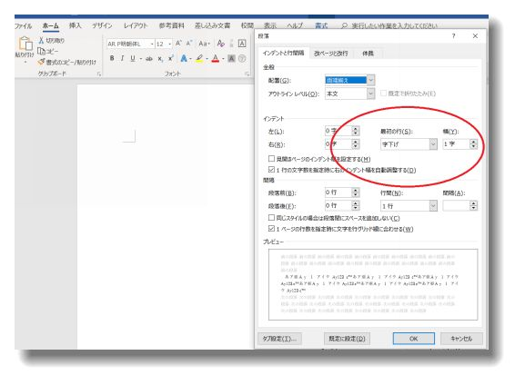

| Wordで作る はじめての電子書籍: はじめて電子書籍を書こうと思ったら読む本 | |
| Kazuma | |
| (2019) | |
Wordで作るはじめての電子書籍
Kazuma
本書に書かれている内容のすべて、あるいは一部を無断複製することは、著作権上で禁じられています。誤字、脱字等ないよう細心の注意を払っておりますが、文章に不備等ありましたら下記までご連絡をいただけると幸いです。
連絡先： wise.art.studio.service@gmail.com
© ２０１９ Kazuma
まえがき
はじめまして、Ｋａｚｕｍａです。
数ある書籍の中から本書を選んでいただきありがとうございます。
本書を手に取ったあなたは、本を書くことに興味があり、いつかは本を発売したいと思っている人だと思います。
本を書こうと思ったあなたは、少なくとも文章を書くのが好きな人だと思います。今は、文章を書くことが好きであれば、誰でも本を発売することができる時代です。
それでも、一歩を踏み出しにくいのは、本を書くことが難しいことだと考えられているからではないでしょうか。
本書は、本を書いてみたい人が、１冊目の電子書籍を発売できるようになるための本です。
本を書くときに、最初にぶつかる壁は、文字数です。例えば、書店に並ぶ小説の文字数は、１０万字以上です。「４００字詰めの原稿用紙で２５０枚」です。気が遠くなる量だと思いましたか。
私も初めて原稿を書いているとき、４万字あたりで、「ようやく1/3を書けた」と考えていました。文字数を稼ぐため、無駄に話を引っ張ってみたり、サブストーリーを入れてみたり、そんな小手先のテクニックを使って目標文字数に近づけることを考えていました。
でも、書いているうちに、それは大きな間違いであることに気づきました。それは、文字数よりも内容を充実させることの方が難しいと感じたからでした。
私の場合、最初は小説を書くことから始めました。しばらく書き進めていると、ゴール（本文を書き終えること）までの一本道が見えたのは、今でも鮮明に覚えています。
コツを掴んだ瞬間でした。その後、書いていた小説の後半は、一気に書き進めることができました。気がつけば、当初予定していた文字数を大幅にこえ、そこから文章を削ることに時間をかけることになりました。
こう言うと、「Kazumaさんは、何かが下りてきて、とりつかれたように文章を書けるだけで、誰でも同じようにはできませんよ」という人もいます。
もちろん私も含め、物書きには癖がありますし、誰でも全く同じ書き方はできないでしょう。私も、「あの有名作家さんのように書けたら」なんて考えたこともあります。でも、電子書籍を発売するには、『特別な能力』は必要ありません。
書きたいことさえあれば、誰でも出すことができる時代です。
もちろん私も、浮かんだアイデアを、すべて本として発売しているわけではありません。思っていたより文字数が伸びない原稿もありますし、書いていて、何か違うと思い、途中の状態で保存している原稿もあります。
原稿を書き終わると、添削です。だいたいうまく仕上げられるのは、目標文字数を大幅にこえているときの原稿です。添削時に文字を足すよりも、不必要な文章を減らすほうが簡単です。そして、何度も書いた原稿を読んでいると、少しわかりにくい表現が見つかります。そこを補足して原稿を完成させます。
添削は、非常に面倒な作業ですが、この作業は電子書籍として本を発売するのであれば、特に重要です。私は、この作業に一番時間をかけていると言っても過言ではないと思います。文章校正をすることで、より読みやすい原稿に仕上がります。
本書は、私が1冊目の本を発売するまでに、悩んだことや、困ったことを中心に自分なりにノートにまとめた内容を整理しています。電子書籍を出してみたいあなたには、参考になると思います。
本書の目的は、あなたが電子書籍を発売することです。そして、費用をかけずに楽しく本を書くことができるようにサポートしたいと思って書きました。
本の内容は問いません。ビジネス書でも、小説でも、趣味の本でも構いません。もちろん、書くジャンルによって文字数は変わりますし、書き進めていく方法も変わります。まずは、原稿を完成させることを目標にしてみましょう。
本書は、時間のないあなたが読み進める上で、興味のある部分から読んでも理解できるような構成で作っています。すでに原稿を書き始めていて、とりあえずわからないことを調べたい場合は、目次から読みたい項目をクリックして、好きなページから読んでください。
では、本書を読み終え、あなたが１冊目の電子書籍を発売したと、報告をいただけることを楽しみにしています。
2019年2月9日（土）
Ｋａｚｕｍａ
目次
動画解説５：【Word】テキストの追加（目次自動作成の準備）
1章 パソコンを使った原稿づくりの基本
１章では、これから電子書籍の原稿を書く人がおさえておきたいポイントをまとめています。書いた原稿の保存方法から表紙画像の大きさまで、いざ本を発売しようと思うと、意外にわからないことが多いものです。電子書籍は、その気になれば誰でも発売できますが、最低限のパソコンスキルは必要です。
でも、難しく考える必要はありません。原稿を書く力さえあれば、電子書籍は発売することができます。
パソコンが苦手な人は、パソコンを立ち上げて、本書を読みながら実際に実践してみてください。パソコン操作でわからないことがあれば、最後に操作方法の動画（無料動画のURL）も用意しています。あきらめず、挑戦してみましょう。
では、始めましょう。
・電子書籍を書くためにどんなソフトが必要か
最初に、あなたの持っているパソコンで電子書籍の原稿を作ることができるか確認しておきましょう。といっても、そんなに高性能なパソコンがいるわけではありません。
原稿は文書データなので、写真や画像を多用する場合を除いて、大きな保存容量にはなりません。わざわざ本を書くために最新のパソコンを購入する必要はありません。
まずは、今持っているパソコンで、書き始めてみましょう。
《必要なソフト》
Microsoftの『Word』
あるいは、WPS Office（旧KINGSOFT）などの文書作成ソフト
まずは、お持ちのパソコンに、マイクロソフト社のオフィスがインストールされているかを確認しましょう。オフィスがインストールされていれば、「Word」という名前のソフトが見つかると思います。
Wordは、文書を作成するソフトです。
文書を作成するだけでなく、電子書籍を発売するのに便利な機能がたくさんあります。本書は、電子書籍の発売するのが目的ですので、電子書籍を発売するのに便利な機能をピックアップして紹介します。
そして、実は、最低限必要なソフトは、この文書作成ソフトだけになります。
《あれば便利なソフト》
表紙画像を作るときに、私が使っているソフトの一部を紹介しておきます。必ず必要なソフトではないので、あえて買う必要はないと思ってください。
《PowerPoint》 ※MicrosoftのOfficeに入っているソフト
プレゼンテーションをするときに使うソフトですが、タイトルと作家名を入れて背景に写真を入れたりすることで表紙を作ることができます。保存するときに、画面キャプチャ（画面の写真を撮るような機能）を使えば、立派な表紙を作ることができます。
《Word》※MicrosoftのOfficeに入っているソフト
文書作成ソフトですが、お店にあるポップなども作ることができる便利なソフトです。背景画像を入れたり、文字の字体や大きさを変更したりすると表紙らしく仕上がります。
《Excel》※MicrosoftのOfficeに入っているソフト
表計算のソフトですが、写真を挿入したり、セルの色を変更したりすれば、立派な表紙を作ることができます。他のオフィスのソフトと同様で、表紙は画像ファイルで保存することが必要になります。
《Snipping Tool》（無料）
標準ソフトで、あまり知られていない便利なソフトです。画面キャプチャをすることで、パソコン画面に映っているものを簡単に画像ファイルで保存することができます。ウインドウズ１０であれば、画面左下に『ここに入力して検索』の枠があると思いますので、『Snipping Tool』と入力してみましょう。
・《ペイント》（無料）
標準ソフトウェアで、写真などを右クリックして編集ボタンを押すと起動することができると思います。ペイントは、画像の幅や高さを変更するときに便利なソフトです。写真や画像に直接らくがきすることもできます。もちろん、文字を入れることもできます。写真を本の表紙にする場合は、ペイントを使って、編集してみましょう。
《透過ソフト》
背景を透過するソフトは、無料ソフトでも多く提供されています。例えば、写真に、ロゴを挿入したりする場合に、必要な箇所以外を透明にして、重ねて画像を使うことができるので、こだわりの表紙を作りたい人は使ってみてください。簡単に言えば、合成画像が作れるソフトウェアです。
・電子書籍を発売するため必要なファイル
電子書籍を発売するために必要なファイル（データ）を確認しましょう。
たった２つのファイルを用意するだけで電子書籍を発売することができます。
《最低限用意するファイル》
・原稿のデータ
・本の表紙画像
電子書籍は、Amazonや楽天を始め、多くの企業が発売できる場所を用意してくれています。審査を通過すれば、個人でも発売することができます。
審査があると聞くと、すごく難しく聞こえますが、盗作していないかなど、基本的な確認だと思って大丈夫です。つまり、あなたが原稿さえ書き上げることができれば、本を発売することができます。
私の場合は、最初に小説を発売し、それから、エッセイやビジネス書、本書のようなハウツー本のようなものを発売しています。経験から、１冊目の発売が一番苦労したのを覚えています。
苦労した中の１つは、ファイル形式などの原稿を書くことと関係のない知識不足でした。１冊発売してしまえば、コツがわかりますので、原稿を書く以外の時間が大幅に短縮できます。つまり、２冊目以降の発売は、１冊目の発売よりずっと楽になります。
【チェック】
電子書籍を発売するには２つのデータを用意する
・原稿のデータ
・本の表紙画像
・電子書籍を発売するのに、パソコンスキルはどの程度必要か
次に、電子書籍を発売するのに必要なパソコンスキルを確認しておきましょう。普通にパソコンを使っていれば、難しいスキルは必要ありません。キーボードを打ったことがあれば、誰でも原稿を書くことができると思ってください。
《原稿に必要なスキル》
文章を書くことができれば問題ありません
原稿を書くのに必要なパソコンスキルは、文字を打つことができることです。もちろん、原稿を書くので、ある程度の文字数を打たなければなりません。人差し指でキーボードの文字を探しているパソコンスキルでは、原稿を仕上げるのに時間がかかるかもしれません。
どうしてもキーボードを打つのが苦手だけど本を発売したい人は、スマートフォンかタブレットのメールで文章を作りパソコンのメールに送信するのもいいでしょう。
パソコンが使えない移動中や、すき間時間に原稿を書く人も、メール機能を使うことで、外でも原稿を書いていくことができますので、意外にメールは便利な機能です。
《表紙画像に必要なスキル》
デジタル写真や画像をペイントで編集することができること
電子書籍は、本の表紙を１枚の画像で用意する必要があります。写真を編集するソフト、らくがきソフト、画面をキャプチャするソフトなど、いろんな方法で画像を作ることができます。もちろん、Wordを使って表紙を作ることも可能です。
・原稿のファイル形式
次に原稿のファイル形式です。本の原稿といえば、紙の印象が強いかもしれませんが、今はパソコンで書くことが一般的になってきました。電子書籍の場合、パソコンで書いた原稿がそのまま本になります。入稿（アップロード）するときには、本文以外のタイトルや目次なども準備しておくことを忘れないようにしましょう。
《原稿執筆はWordがおすすめ》
本書は、マイクロソフト社のWordを使って原稿を書いています。Wordには、電子書籍を作るときに便利な機能がありますので、パソコンにWordが入っている場合は、Wordを使って原稿を書いてみましょう。原稿ができるまでは、保存するファイル形式は、Word文書（*.docx）で保存して問題ありません。
《会社によって、入稿するファイル形式が違う》
Amazon（Kindle direct publishing）で発売する場合、現在はWord文書での原稿アップロードに対応しています。
※以前は、DOC（.doc）で入稿する必要がありました
楽天（Kobo）であれば、EPUB3というファイル形式の対応になります。
※EPUB3とは、電子書籍のファイルフォーマット規格のひとつ
原稿が仕上がったら、対応している入稿のファイル形式を確認しましょう。電子書籍のファイルフォーマット規格とはいえ、Ｗｏｒｄで書いた原稿データを、名前を付けて保存時に、EPUB3のファイル形式で保存できるわけでありません。つまり、Word文書（.doc）を、EPUB3に変換する作業が必要になります。
Word文書（.doc）を、EPUB3のファイル形式に変換するサービスはいくつもあります。その中でも、容量制限があるとはいえ、無料でEPUB3のファイルに変換してくれるおすすめのサイトは、Romancer（ロマンサー）です。
※本書はRomancerをおすすめしていますが、Romancerのサイトを保証しているわけではありません
楽天（Kobo）及びEPUB3での入稿が必要なサービスを通じて書籍を発売する際は、一度「EPUB3」のキーワードで調べてみて下さい。
《データを保存する習慣をつける》
集中して執筆していると、ついデータを保存するのを忘れて書いてしまうこともあると思います。パソコンは便利ですが、フリーズしたり、電源が落ちたりすることもあります。
執筆は、あなたのアイデアです。特に小説などの場合、電子書籍でも、文字数は１万字よりも多くなります。いくら原案をノートなどにまとめていたとしても、すべて手書きで下書きをしている人は少ないでしょう。
そうなると、もし書いている途中にデータが消えてしまったら、大まかなストーリー案以外の、繊細な表現方法などをすべて思い出し、再現しながら打ち直すことになります。
せっかく書いているデータが消えてしまわないように、こまめにデータを保存するようにしておきましょう。
なお、オフィス３６５の契約をしている場合、Wordでは、左上の部分で自動保存のオン、オフを設定できます。定期的に保存をするのが面倒な人は、自動保存をオンにしておきましょう。
※自動保存は、OneDrive（オンライン）でのデータ保存になります
【チェック】
・原稿はWordを使って書く
・発売する会社によっては、入稿時にファイル形式を変更する必要あり
・表紙画像のファイル形式
《発売されている本の表紙を研究しよう》
電子書籍を発売するにあたって、表紙を作成する必要があります。あなたの本棚か、本屋さんに行って、発売されている本の表紙を確認してみましょう。
本のタイトルだけが書かれているシンプルな本、写真を使っている本、絵が描かれている本など、様々な表紙があることに気づきましたか。
本の表紙は、読者様が最初に本に興味をもってくれるかどうかの重要なものになります。例えば、写真のハウツー本を出すのに、表紙に写真が入っていなければ、手に取らないかもしれません。ライトノベルだと、タイトルだけでなく、挿絵がある表紙だと興味をもってくれるかもしれません。もちろん、正解はありません。ビジネス書に、うまくアニメ調の挿絵を入れて売れている本もあります。
《表紙を作るタイミングは？》
私の場合は、本文を書いてから表紙を作成しています。本を実際に書き上げてから、何度も原稿を読み直すことになりますので、添削しながらイメージを膨らませて表紙を作るようにしています。最初から書くことが決まっている人や、表紙のイメージがすでにできている人なら、先に表紙を作るのもいいかもしれません。
本来は、本を書く技術と、表紙を作る技術は別ですので、作家さんが表紙を作らない方法を取るのが一般的です。ただ、お金をかけずに本を出版するのを目標にしているあなたは、自分で作る方法を知っておきましょう。
《表紙画像のファイル形式》
画像のファイル形式ですが、JPEG（.jpeg)形式で用意しましょう。
Amazon（Kindle direct publishing）では、TIFF形式、楽天（Kobo）ではPNG形式もサポートしていますが、JPEG形式にしておけば、どちらのサービスでも対応することができます。よほど、ファイル形式にこだわりがある場合以外は、JPEG（.jpeg)形式がおすすめです。
本のサイズは、一般的には、A5サイズ（ハードカバー本）、B6サイズ（文庫本サイズ）など様々なサイズがありますが、電子書籍の場合は、Amazonで推奨しているサイズで作成することから始めてみましょう。
《本のサイズのピクセル（参考）》
・推奨サイズ
幅１６００ピクセル × 高さ２５６０ピクセル
【その他参考値】
・A5サイズ（ハードカバー本）
幅２１２２ピクセル × 高さ２９７６ピクセル
・A6サイズ（文庫本）
幅１５３０ピクセル × 高さ２１２２ピクセル
・A4サイズ（週刊誌、一般雑誌）
幅２９７６ピクセル × 高さ４１７５ピクセル
《注意点》
画像は、サイズが大きすぎるとデータが重くなり、小さすぎると画質が悪くなるので、推奨サイズあるいは、その他参考値を目安にしてください。
表紙以外に画像を多用している書籍を作る場合、カラー表示をサポートしている端末以外では、グレースケール画面になるので注意が必要です。
【チェック】
・画像はJPEG形式で用意する
・推奨サイズ 幅１６００ピクセル×高さ２５６０ピクセル
2章 原稿のテンプレートを作ろう
1章では、パソコンで電子書籍を作るための知識を習得していただきました。
お疲れ様でした。
２章では、電子書籍の原稿を書くWordのテンプレートの作り方をご紹介します。テンプレートがあれば、2冊目以降の原稿を書くときに便利です。
新しい原稿を書くときに、Wordの設定を変更するのは意外に面倒です。
テンプレートがあれば、本の原稿を書くときに、Wordの設定を変更することなく、原稿を書き始めることができます。
パソコンが苦手な人ほど、テンプレートを作っておくことをおすすめします。
パソコンが苦手な人は、細かな設定変更もストレスになると思います。
テンプレートを作っておくことで、手間を削減することができます。
例えば、以下のような手間を削減できます。
・ 改行したときに、自動で一字落とすことができる
・本の構成を設定しておくと、 目次作成など素早くできる
（前付け、１章、２章などの本文、後付けなど）
・前回書いた書籍の字体を調べなくても、 同じ字体で原稿を書ける
最初の一手間を惜しまないことで、余分な時間を短縮し、原稿を書く時間にあてることができます。ぜひ、テンプレートを作ってみてください。
本を書き始める前に、Word文書のテンプレート（ひな形）を作成してみましょう。
テンプレートを作っておくと、次回以降の原稿執筆時にスムーズに書き始めることができるため、将来的に本を何冊も出すのであれば効果は絶大です。まだ原稿を書き始めていない人は、最初にテンプレートを作るようにしてください。
文字の設定や、改行したときに、自動で一段文字を落としてくれる機能を始め、目次を自動で作ってくれるなど、Wordには、様々な便利機能があります。積極的に活用しましょう。
《縦書きか横書きか》 ※最後に復習動画あり
縦書きか、横書きかの決まりはありません。本の内容で使い分けをしてください。
本書のように図（写真）を使う場合や、表を使う本の原稿を書くときは、横書きが見やすいでしょう。小説や自己啓発本などの場合、縦書きの方が読みやすいこともあります。
迷ったときは、何冊か電子書籍を読んでみましょう。無料で発売されている電子書籍もありますので、あなたが書こうとしているジャンルの本を何冊か読んでみて、読みやすかった本が横書きなら横書き、縦書きなら縦書きで書いてみてはいかがでしょうか。
Wordの初期の設定は、横書きになっています。横書きで原稿を書く人は、そのままの設定で書き始めることができます。
原稿を縦書きにするときは、レイアウトの文字列の方向の設定を縦書きに変更してください。
《文字の設定》
本書は、『AR P明朝体L』の書式を使っています。一般的には、明朝体あるいはゴシック体の文字の中から好みの字体を選ぶといいでしょう。
文字の太さは、標準と太字を使いわけることができます。Wordの機能で、箇条書き、特殊なフォント、ヘッダー、フッターなどは、電子書籍では変換されないので使用しないように注意してください。
Amazon（Kindle direct publishing）では、インデント、太字、斜体、見出しは、使用することができます。
《字下げ（段落の設定）》 ※最後に復習動画あり
電子書籍の原稿を書くときは、Spaceキーで文字の字下げを行わず、ホームの段落の設定を使用するようにしてください。Spaceキーで字下げをしても、電子書籍では字下げされないので注意が必要です。段落の設定を変更して、改行したら自動で文字の字下げを行う設定をしましょう。
〈自動字下げの設定方法〉
ホーム→段落→インデント設定
段落の詳細ページが出たら、インデントの設定を変更しましょう。最初の行を『字下げ』に設定し、幅を一字にしてください。

※お使いのＷｏｒｄのバージョンによっては、幅を１字に設定できない場合があります。その場合は、プレビューを確認しながら、文字を自動でどれぐらい落とすか設定してください
【チェック】
・テンプレートを作ることで、何冊も本を出す場合に書式を統一しやすい
・字下げはSpaceキーで行わないこと
・原稿を書くときの便利機能
次に原稿を書いていくときに知っておいてほしいWordのテクニックを紹介します。あとで文章校正をするときにも楽になりますので、使いこなすようにしてください。と言っても、そんなに難しくないのでご心配なく。
《改ページ》 ※最後に復習動画あり
本の章の区別を明確にするために、各章の末尾に改ページを挿入します。
次のページまで改行したいときに、Enterキーで次のページまで進むのではなく、改ページを使用するようにしてください。
〈改ページの挿入方法〉
挿入→ページの区切り
《章や節を設定する》 ※最後に復習動画あり
目次を設定するにあたり、章や節を設定しておくと便利です。
Ｗｏｒｄの自動目次作成機能は、このテキストのレベルわけをしておかないと自動作成できませんので、設定するようにしてください。
〈章や節などの設定方法〉
目次を自動作成するためには、原稿のどの部分が目次（章のタイトル）になるかを指定する必要があります。
参考資料→目次→テキストの追加
※テキストの追加で、レベルを選べますが、1章をレベル1に設定した場合は、2章もレベル1で設定するようにしてください。1章、1節など細かく目次をわける場合は、レベル1を章、レベル2を節など、自分なりにルールを決めて設定するようにしてください。
《目次の自動作成》 ※最後に復習動画あり
電子書籍は、目次ページを作っておくと、読者は読みたいページから読むことができるようになります。電子書籍には、ページ番号が使用されませんので、本の内容が一目でわかるよう目次ページを作成しましょう。
〈目次の設定〉
先に、目次を挿入したいページにカーソルを置いてください
参考資料→目次→組み込み→自動作成目次で好きなものを選ぶ
《目次の更新》 ※最後に復習動画あり
目次を設定したあとに、文章を書き足した場合、内容を変更した場合は、目次の更新が必要になります。更新ボタンを押すことで、自動で目次の内容が最新の状態に更新される便利な機能です。ぜひ活用しましょう。
目次を更新するときには、『目次をすべて更新する』を選ぶことで、文字やページ数など、すべての項目を自動で更新することができます。

《表や画像を挿入する》
表や画像を挿入する場合は、他のソースからコピー、ペーストで作業するのではなく、挿入メニューから挿入する必要があります。
本文内に画像を多用する場合は、電子書籍を読む端末によっては、グレースケール画面になることもあることを知っておいてください。
【チェック】
・次の章に進む場合には、改ページを使用する
・目次を自動作成するために、テキストの追加で章や節の設定しておく
3章 本を書くための基本
2章では、電子書籍の原稿を書く上で、便利なWordの機能を紹介しました。
お疲れ様でした。
3章は、初めて本を書く時に知っておいてほしい原稿を書く基本をご紹介します。
基本をおさえて原稿を書くと、素人っぽくない仕上がりになると思いますので、ぜひ参考にしてみてください。
本は、もちろん中身が重要です。それでも、本書を読んでいるあなたは、本文がうまくできているから大丈夫と思わず、ぜひ本の体裁を整えておきましょう。
わかりにくそうな言葉は補足してありますので、難しく考えず読み進めてください。
まずは、本の構成（例）を確認してみましょう。
・本の構成
電子書籍の一般的な構成を紹介します。
《 表紙 （画像）》
《前付け》
タイトルページ
著作権ページ
献辞
前書き
序文
《 目次 》
《本文》
1章
2章
3章
・・・
《付録》
著作目録
付録
解説
用語集
ご紹介した項目を、すべてを織り込まなければならないわけではありません。
表紙と本文だけの味気ない原稿に、前付け（目次を含む）や後付けを追加していくことで、あなたの書く書籍がより洗練されたものになります。
逆に前付けにすべてを織り込むと、本文を読み始めるまで少し時間がかかるため、あえてシンプルな構成にするのもよいでしょう。電子書籍をあなたが読むときに、どんな構成だと読みやすいか、読者側の立場に立って考えてみてください。
次に、ご紹介した構成の言葉の説明をしておきます。どの項目を織り込むか検討するときに参考にしてみてください。
《前付け》
前付けとは、本文の前に添える前菜のようなものです。タイトルや著作権ページ、献辞、前書き、序文など、あなたの書く本のテーマに合うものを選ぶようにしてください。
《著作権ページ》
通常、このページは、タイトルページの後に挿入します。あなたの作品は、あなたの分身です。ぜひ、著作権の詳細情報を入れておきましょう。
《献辞》
献辞がある場合は、著作権ページの後に挿入しましょう。
献辞とは、著者が、本を誰かに贈るときに書く言葉です。本を作る過程で、助言をくれた人や、恩人などに感謝や敬意を表すために書く内容だと思ってください。最近の傾向は、あとがきの部分の最後に、2,3行の献辞をつける書籍が多いので、あえて、著作権ページの後に書く必要はないかもしれません。
《前書き》
前付けの中でも、前書きは挿入するようにしましょう。
ほとんどの本で、まえがきは挿入されています。あえて用意しない場合を除いて、まえがきを挿入しておくのがおすすめです。
まえがきは、本の紹介でもありますし、うまく活用することで、本文をより際立たせることができます。多くの人が、その本を買うかどうか迷ったときに、前書きや目次を読んで決めています。本文の次に重要な項目だと思っておいてください。
《序文》
本の主旨や書いた経緯などを書く場合は、序文を入れることも検討してみましょう。
前付けはたくさん挿入すればいいというものではありませんので、まえがきをしっかりしたものにするのであれば、あえて挿入する必要はありません。特に、初めての書籍の場合は、序文を書かないで、本文を充実させることに力を注ぐのがおすすめです。
誰かに、あなたの書いた本を読んでもらい、序文をお願いするのであれば、まえがきとは別に序文を用意しておくとよいでしょう。
※本書では、前付けの中で、タイトルページと前書きを採用しています
【チェック】
・前付けに力を注ごう
・前付けや後付けをうまく使うことで本を魅力的に色付けしよう
・電子書籍の文字数
特に文字数に決まりがあるわけではありません。
発売する書籍の種類によっても変わってきます。
小説は、ストーリーを展開するにあたって、ある程度の文字数がないと読んだ人が物足らないと感じますので、ある程度の文字数は必要になります。2万字以上で組み立てるようにしてみてください。
ハウツー本であれば、量よりも質を求められます。文字数は、1万字以上あって内容が充実していれば、問題ありません。
ただし、5千字未満の文字数の場合、書籍を買った人が損をした気分になるので注意が必要です。あなたの本を買う読者が喜んでくれるような本にする努力をしましょう。
紙の本であれば、12万字前後の文字数がありますが、電子書籍で読みやすいのは、1万字から4万字あたりです。私は、発売価格に関係なく、買っていただく読者様がじっくり読める量を書きたいと思い、小説は8万字以上で書くようにしています。
このあたりは、作家としてのあなたの考え方になります。
最低でも、1万字以上の原稿を書くことを意識して、あとは、自分なりのルールを決めて原稿を書くようにしてみてください。
【ポイント】
・ジャンルが決まったら原稿の文字数をおおよそ決めてみよう
・どれだけ少なくても1万字を目安にしておこう
・わかりやすい言葉で書く
専門用語が必要な本ほど、わかりやすい表現を意識するようにしてください。
たまに専門用語が多い本や、普段使わないような漢字を多用している本があります。業界関係者しか読まない専門誌であれば、もちろん専門用語を使うことは問題ありません。
電子書籍は、インターネットで誰でも買うことができる商品です。
あなたが新しいことを覚えようと、本を買うことをイメージしてみてください。買った本が、全く知らない専門用語ばかりで理解できなさそうだと思ったら、あなたならどうしますか。きっと、あなたはその本を最後まで読まずに閉じるでしょう。
当たり前のことですが、小説であれ、エッセイであれ、自己啓発本であれ、本を出すということは、あなたがメッセージを発信し、読者がメッセージを受け取るということです。
つまり、読者はお客様です。お客様は、あなたの本を読むことで何かを得ようと考え、購入しているということを忘れないようにしてください。
重要なことなので、もう一度書いておきます。 読者はお客様です。作家がいかに賢いかを知りたいわけではなく、読者自身が何かを得るために本を購入します。
この基本を忘れないようにしてください。
では、具体的には、どうすればいいのでしょうか。
《専門用語は別の言葉に置き換えるか、補足をいれる》
専門用語は、言葉の通り、一般的ではない言葉です。その業界に精通している人でないと理解できない言葉だと思ってください。業界の人だけに向けた専門誌である場合は専門用語を使っても問題ありませんが、そうでない場合は専門用語を使わずわかりやすい一般的でわかりやすい言葉に置き換えるか、専門用語の説明を入れるようにしてください。
どんな読者が読んでもわかるように書かれているのが理想的です。専門用語を一切使わないぐらいの気持ちで書いてみましょう。
どうしても専門用語を使わないといけない場合は、専門用語に補足を入れるようにすることを心がけましょう。補足を入れることで、読者は専門用語を理解することができます。
《文章はできるだけ無駄のないわかりやすい表現方法で》
本は、作家が儲かるためだけにあると思っている場合は、少し視点を変えてみましょう。本はそもそも、読者が新しい発見をするために存在しています。
たまに、必要以上に難解な文章で書かれている本があります。難解な文章を書く理由は、2つあります。
1つは、書いている内容を、作家自身が深く理解していないことです。
物事のさわりだけ知って、いきなり原稿を書き始めると、言葉の意味を理解しないまま、難しい文章でごまかしてしまいがちです。この場合は、もっと書きたい内容を整理して、言葉のひとつひとつの意味を作家自身が理解することで、よりシンプルでわかりやすい表現になります。
もう1つは、作家のエゴです。
自分がいかに知的であるかを表現することを重視すると、どうしても難解な文章になりがちです。本当に賢い人ほど、簡単な言葉で表現します。できるだけ、誰でもわかる言葉に置き換えるようにしましょう。理解されない文章は、知的さに欠けていると思うぐらいでちょうどいいと考えてください。
昔から、新聞は小学校六年生ぐらいが理解できる内容で書いてあると言われています。記事を書くプロでさえ誰でも理解できるレベルを目指しているということです。あなたもぜひ、できるだけ読みやすい文章を心がけてほしいと思います。
《手書きであまり書かない漢字を使わない》
パソコンで文章を書く時代になったことで、簡単に漢字に変換できます。普段使わない漢字も、Wordなら簡単に変換できてしまいます。普段は便利な変換機能ですが、原稿を書くときは注意が必要です。漢字が多すぎても、少なすぎても、読みにくい文章になります。本来、漢字にしなくてもいい文字まで漢字にしないようにしましょう。
普段使わない漢字は、使わないぐらいの気持ちで原稿を書いてください。
【チェック】
・専門用語はなるべく使わない
・読みやすい文章は読者への気遣い
・必要以上に漢字に変換しない
あなたは、誰に書いたかわからない手紙を読もうと思いますか。
もちろん、いい本は年齢問わず読まれているのかもしれません。でも、最初に発売する本は、ターゲットを絞って書くことを意識してみましょう。
どんな人に読んでほしいのかイメージを膨らませてください。
年齢、性別だけでなく、どんな仕事をしている人なのか、性格はどんな人なのか、どんな生活をしている人なのか、想像力を膨らませ、ターゲットをどんどん狭くしてみましょう。ターゲットを絞ることができれば、文章の書き方も変わってきます。
大人向けの書籍であれば、ある程度の漢字は使うでしょう。もし、同世代向けの書籍なら、対等に話している文章になるかもしれません。人生の大先輩に向けて書くのであれば、丁寧な言葉遣いを心がけるはずです。
究極は、一人までターゲットを絞った本を書くのがいいと言われています。どうしても、ターゲットの絞り込みができない人は、過去のあなたをターゲットにしてみるのもおもしろいかもしれません。
【チェック】
・ターゲットにしている読者を想像して文章を書く
最後に原稿を書くときのヒントをご紹介します。
困ったときに参考にしてみてください。
書くテーマが見つからない
書くテーマが見つからないときは、あなたの中に書くテーマがあることを思い出してください。あなたが当たり前にできることの中に、本を書くヒントがあります。
例えば受験勉強をして、志望大学に入学できた人なら、あなたが志望大学に入れた内容を思い出し、どのように勉強をしたのかを書くのもいいですし、どのような時間配分をしてうまくいったのかを書くのもいいでしょう。もっと言えば、どのような考えで受験に臨んだのかなどの自己啓発本でもいいでしょう。
これから受験をしようと思っている人にとって、あなたの本は役に立つでしょう。
途中で書けなくなってしまう
原稿を書き始めてから、書きたいことを全部書いたものの文字数が少ないときは、書いた文章を読み返してみましょう。ひょっとしたら、説明不足の部分が見つかるかもしれません。あるいは、視点を変えてみるのもいいかもしれません。
例えば、読書をテーマに原稿を書いているとしましょう。読書をテーマにした場合、視点を変えることでいろんな内容で書くことができます。
本の選び方、読書の継続の仕方、速読の方法、読書をした内容のまとめ方など、様々な視点で書くことも検討してみても良いでしょう。
途中で書けなくなってしまう理由の1つは、情報の出し惜しみです。知っている情報を1冊の本にまとめるのがもったいないと考えてしまうことです。途中で書けなくなった場合、書いているテーマであなたが知っていることをすべて書き出してみましょう。出し惜しみせずに知っている情報をすべて出せば原稿の完成に近づくでしょう。
あれもこれも書きたくなってひとつの原稿に集中できない
原稿を書いていると、別のことを書きたくなって書き始め、またしばらくすると次の書きたいことが見つかって、また別のことを書いてしまう人は、書きたいことがたくさんありすぎて、何を書くか明確になっていないのかもしれません。
そんなときは、書きたいことを一旦書き出してみることをおすすめします。箇条書きでもいいですし、人間関係相関図のように視覚的に表現してみてもいいでしょう。
自分の知識が役に立つのか不安
あなたの知識を求めている人は、必ずいます。
仮にあなたが、自分の知っていることなんて役に立たないと思っているのだとしたら、あなたは自分のことを過小評価しています。
「学歴もなく、仕事も普通、特技もないし、資格もない」
そんなことを考える必要はありません。
学歴も資格もなく、仕事でも活躍できず、資格もない人の悩みは、同じ境遇の人にしかわからないと考えます。
『学歴も資格もない私が一冊の本を発売できた理由』なんていうのもおもしろいですね。
つまり、ピンチはチャンスだと考える習慣をつけてみると、ヒントが見つかります。ぜひ、挑戦してみてください。
さいごに
最後までお読みいただき、ありがとうございました。
原稿書きに限らず、創作という活動は、どうしても孤独との戦いになります。
それでも、電子書籍を発売しようと思ったあなたを、ぜひサポートしたいと思い本書を執筆しました。
最後まで読んでいただけたあなたに、最後の助言をすることで、本書を締めくくりたいと思います。
・ 完璧を求めず、まずは最後まで書き進めてみよう
最初の1冊を書くときには、必要以上に構えてしまいます。
まじめで一生懸命な人ほど、きりのいいところまで書いたら何度も読み直し、文章を修正します。そして、なかなか前に進まないこともあるでしょう。あるいは、書く内容を一生懸命考えすぎて、なかなか原稿を書き始められないこともあるでしょう。
そんなときは、この言葉を思い出してみましょう。
『 最初から完璧を求めることをやめ、まずは完了させる 』
本書を読んだあなたから、「電子書籍を発売できた」と報告をいただけるのを楽しみにしています。
本書をぜひ評価していただけると助かります。そして、本書に関するお問い合わせ、ご質問などは、遠慮なく下記に送ってください。もちろん、本の発売をできた人の報告も待っています。
メール： wise.art.studio.service@gmail.com
では、またお会いしましょう。
最後までお読みいただき、本当にありがとうございました。
二〇一九年二月九日
Kazuma
復習動画（無料）
本書の中で、Wordの機能を紹介している部分で、初めて使う人にはわかりにくいと思った部分の補足動画を作成しました。
本文の途中で、『※最後に復習動画あり』と書いてあった項目の動画を用意してありますので、本書で理解できなかった箇所がありましたら、参考にしてみてください。
動画解説１：【Word】画面でおさえておきたい３つの名称
Youtube無料動画URL： https://youtu.be/VE5lgxpnJBI
動画解説２：【Word】文字を横書きから縦書きに変更する
YouTube無料動画URL： https://youtu.be/YYM8vkw9oy0
動画解説３：【Word】文字の字下げ設定
YouTube無料動画URL： https://youtu.be/JHZiZqkzmnA
動画解説４：【Word】改ページ
YouTube無料動画URL： https://youtu.be/juETQKqXkGA
動画解説５：【Word】テキストの追加（目次自動作成の準備）
YouTube無料動画URL： https://youtu.be/GLu0WcGk774
動画解説６：【Word】目次の自動作成
YouTube無料動画URL： https://youtu.be/GLu0WcGk774
動画解説７：【Word】目次の更新
YouTube無料動画URL： https://youtu.be/bwft1GDAq30
最後までお読みいただき、ありがとうございました。
本書を読んだあなたが、最初の電子書籍を発売するのを楽しみにしています。
またお会いしましょう。
2019年2月11日（月）
Kazuma